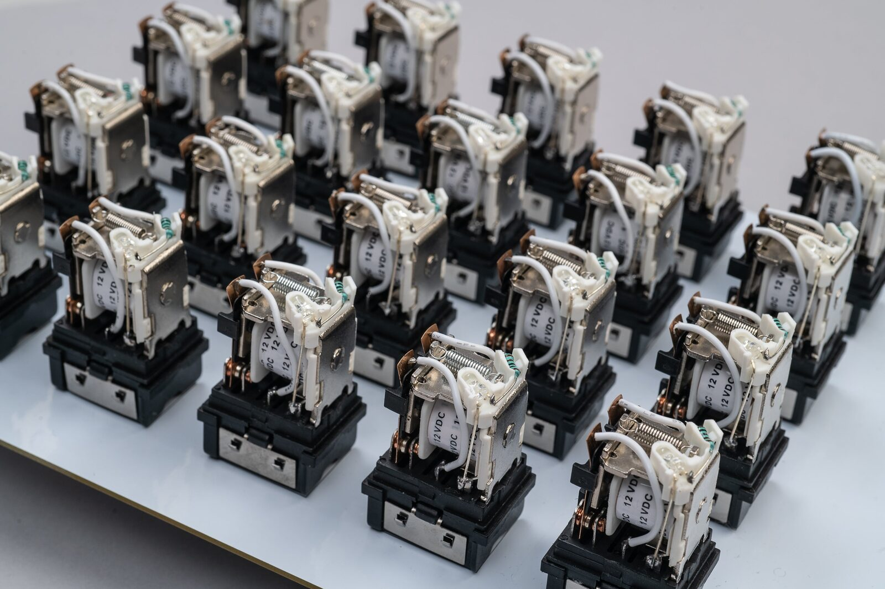
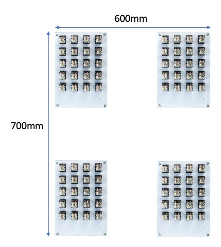
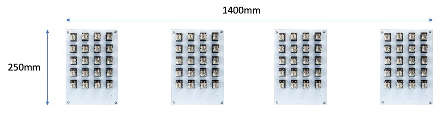
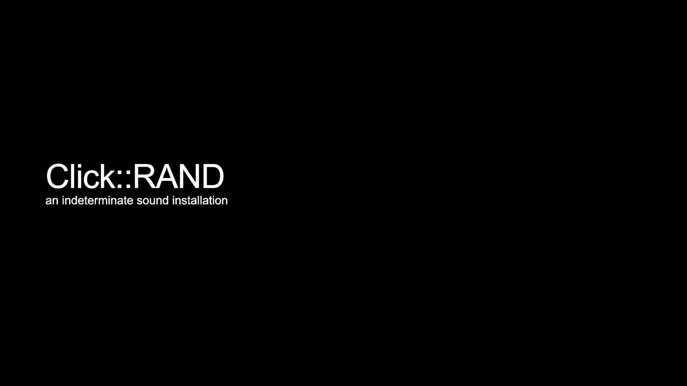

Click::RAND\#2. An Indeterminate Sound Installation
Abstract
Can random digit data be transformed and utilized as a sound installation that provides a referential connection between a book and the electromechanical computer? What happens when the text of A Million Random Digits with 100,000 Normal Deviates is ‘vocalized’ by an electro-mechanical object? Using a media archaeological research approach, Click::RAND#2, an indeterminate sound sculpture utilising relays as sound objects, is an audio-visual reinterpretation and representation of an historical relationship between a book of random digits and the electromechanical relay. Developed by the first author, Click::RAND#2 is the physical re-presentation of random digit data sets as compositional elements to complement the physical presence of the work through spatialized sound patterns framed within the context of Henri Lefebvre’s rhythmanalysis and experienced as synchronous, syncopated or discordant rhythms.
Project Description
Can random digit data be transformed and utilized as a sound installation that provides a referential connection between a book and the electromechanical computer? What happens when the text of A Million Random Digits with 100,000 Normal Deviates is ‘vocalized’ by an electro-mechanical object? Click::RAND#2, an indeterminate sound sculpture utilising relays as sound objects, is an audio-visual reinterpretation and representation of an historical relationship between a book of random digits and the electromechanical computing. Click::RAND#2 converts RAND Corporations book of random numbers into an audiovisual series of binary sequences. The work presents these binary sequences as spatialized sound patterns to complement the physical presence of the work. These patterns, as rhythms, are framed within the context of Henri Lefebvre’s rhythmanalysis and experienced as synchronous, syncopated or discordant rhythms. As such, Click::RAND#2 explores the possibility of “embodying the notation of presence and absence” as a method to expose the patterns of state transitions of binary sequences as a series of rhythmic forms. [1]
Click::RAND#2 is the sonic articulation of a large set of true random numbers produced by RAND Corporation. Motivated by this need in its own experimental research, RAND Corporation constructed an electronic mechanism to generate random numbers and punch them onto cards. The random data set consisted of 20,000 punch cards with 50 numbers on each. RAND Corporation published the work as A Million Random Digits and 100,000 Normal Deviates book in 1955. The volume consisted of two large tables that contained 1,000,000 random digits and 100,000 Gaussian deviates. RAND Corporation has noted the tables have become “a standard reference in engineering and econometrics textbooks and have been widely used in gaming and simulations that employ Monte Carlo trials” and were “routinely used by statisticians, physicists, polltakers, market analysts, lottery administrators, and quality control engineers.” [2] This book is the stimulus for the ideation of a non-deterministic sound installation. Click::RAND#2, using these artefacts as the input and output media, explores the media archaeological relationship between two artefactual forms of media, electromechanical computers via the relay and the RAND Corporation’s book of random digits to create an indeterminate sound installation. Now freely able electronically, these data files have been creatively appropriated for compositional use in Click::RAND#2.
Click::RAND#2 comprises a series of ‘sound boards’ (see Fig.1). Each sound board is a self contained printed circuit board foregrounding 20 relays as the sound producing objects. The structural layout of the sound board is informed by the textual layout of the random digit tables in the book. All electronic componentry is contained on a single PCB. These components include the driver circuitry to actuate the relays, a Teensy 3.5 microcontroller and voltage regulation. The Teensy microcontroller programmatically controls each relay through MOSFET driver circuitry. Custom developed software is used to control the work and to select the various data elements. A digit is randomly selected from the digit file then translated into its binary equivalent which is split into its individual symbols (0s, 1s). These are sent as high or low pulses by the Teensy to the input gate of the associated MOSFET which, in turn, engages the relay. Click::RAND#2 uses the random digit data as an input source and the relay as a output sound object to explore the inherent rhythms that exist in the random digit sets re-presented as binary sequences. As a series of self-contained sound boards , Click::RAND#2 can be adapted to many physical spaces as a way of incorporating different acoustic properties into the installation.


Click::RAND#2 Sound Board
Drawing on a material media archaeological approach as a microphysical close hearing of sound, Click::RAND’s aurality is based on a close listening to the sonic artifacts of a single relay. Isolating the relay to a single sounding object, its individual sonic materiality is heard as a click when the relay’s contacts engage and disengage, However, the use of a single relay provides a limited sound palette and constrains the compositional outcome of deploying this palette. On first listening there is no discernible difference in the sound of each relay. However, a timbral variation is manifest as a higher pitch resonance that can be heard when a relay is being regularly pulsed. This sound is a result of the spring’s tension and release and has the effect of creating a higher frequency drone across a series of relays. Using binary sequences as series’ of ‘moments’ introduces differences into what could be considered a continuous or linear form of repetition analogous to a metronome. Introducing difference in this way is a potential strategy to create interest with such a limited sonic palette.
Click::RAND#2 weaves together quantified moments of binary sequences within a compositional framework based on Henri Lefebvre’s rhythmanalysis. Within this framework, three expressive forms of message replay are conceived. Lefebvre’s Rhythmanalysis is comprised of a variety of rhythms that coexist and clash. These he categorises as eurhythmia, polyrhythmia and arrhythmia. Eurhythmia is considered to be the smooth combination of rhythms in equilibrium. Polyrhythmia is composed of diverse rhythms that, at times, interact to maintain a symbiosis but at times clash as relational forces of contradictions and resistance to maintain a harmonious relationship. Arrhythmia is the state of discordant rhythms, rhythms that break apart in a divergence of time and space. [3] Accordingly, Lefebvre contends that rhythm embraces both cyclic and linear forms of repetition, as “rhythmed times and brutal repetition” in tension and opposition to each other. [4] Alongside a linear rhythm, the recursive loops of cyclical rhythms creates an emergent interaction of repetition, rupture, and resumption. [5] Henri Lefebvre notes that the triadic concept of melody-harmony-rhythm is at the centre of musical life and cannot be separated. However, he notes an antagonism can exist if one of these elements tends to dominate the others. Arguing that modern music finds itself “back in the body” with rhythms supplanting melody and harmony without suppressing them, Lefebvre sees these changing antagonistic relations creating interest within the triad. Each of Click::RAND’s rhythmic forms are titled after Lefebvre’s characterisation of Rhythmanalysis. Eurhythmia shows the smoother rhythmic but machine-like patterns of interwoven binary sequences across multiple rows of relays. Polyrhythmia introduces the element of space into the compositional form, both physically by the placement of sound blocks and into the work as the presence and absence of sound. Arrhythmia’s tempo disturbs the work’s spatio-temoral element through the presence and absence of sound as nonsynchronous binary sequences. The relays’ clicks are the concrete abstraction of the inherent rhythmic pattern within binary sequences. The repetition of a linear time, and moments of rupture and antagonism, manifest as a difference are explored and experienced through the rhythmic pulses of the relays. Examples of each rhythmic form are shown in the associated media links.
Click::RAND#2 re-presents the random digits as a series of compositions to explore the inherent rhythms present in binary encoded format. Using the relay as the sound producing object, the rhythmic patterning as a presence and absence of sound is manifested by the metallic clicking of the relays’ contacts. Reduced to a primal level as 0s and 1s A Million Random Digits with 100,000 Normal Deviates original data is expressed as an articulation of the media in the present and as a connection with the past articulations of the data sets in their various material forms.
Installation Notes
Click::RAND#2 consists of a series of up to 16 wall mounted sound boards. Utilizing the sound boards in various configurations allows the acoustics propeorties of different spaces to be explored as an element of each installation. This proposal will install a series of sound boards in different locations to allow an audience to experience each of the three compositional forms in these spaces. Two of the installation layouts are shown in Figures 2 and 3. The third installation consists of a single board. In total, this submission proposes three installations in different locations of the conference campus. At each location a single power outlet is the only requirement.
Installation Requirements
As noted in the previous section, a single power outlet is required in each installation space. In addition, each installation wall must be a smooth surface for the wall mounts to be affixed.


Proposed Installation Layout #1


Proposed Installation Layout #2
Table I. Equipment Requirements | |
|---|---|
Power oultets and extension leads (x3) | Organization |
Wall fixings | Self |
Media

▶Video: https://vimeo.com/500220648
Video: https://vimeo.com/500220872
Video: https://vimeo.com/500220993
Feasibility
Click::RAND is constructed as a series of self-contained works and, as such, only needs the logistical requirements noted above. I have implemented and exhibited similar work as shown below.
Nov. 2016 | Resonance. Dowse Art Gallery, Lower Hutt, NZ Tapeworm (Electro-mechanical Performance) |
Nov. 2016 | VUW Creativity Week. Victoria University, Wellington, NZ Tapeworm (Electro-mechanical Performance) |
Aug. 2017 | Sonic Arts Expo. Victoria University, Wellington, NZ Click::Bit (Electro-mechanical Performance) |
Oct. 2017 | Composers Competition. Adam Concert Room, Wellington NZ Click::Byte (Electro-mechanical Performance) |
May 2019 | Pyramid Power Festival. Pyramid Club, Wellington, NZ Click::RAND (Installation) |
May 2019 | Science & Technology Expo. Lower Hutt, NZ Click::RAND (Installation) |
Nov. 2020 | Tuning in the Pandemic - Music Conference. Massey University, Wellington NZ Click::TWEET (Installation) Click::RAND#2 (2x Installations) |
Citations
J. Lacan, “Psychoanalysis and cybernetics, or on the nature of language,” in The Seminar of Jacques Lacan, vol. 2, London ; New York: W.W. Norton & Company, 1988, pp. 294–308.
↩W. H. Ware, RAND and the information evolution: a history in essays and vignettes. Santa Monica, CA: Rand Corp, 2008
↩S. Miyazaki, “AlgoRHYTHMS Everywhere: A Heuristic Approach to Everyday Technologies,” in Off Beat: Pluralizing Rhythm, J. H. Hoogstad and B. Stougaard Pedersen, Eds. Brill | Rodopi, 2013, pp. 135–148.
↩H. Lefebvre, Rhythmanalysis: Space Time and Everyday Life, English Translation. London: Continuum, 2004.
↩D. Lyon, What is Rhythmanalysis? Bloomsbury Academic, 2019.
↩